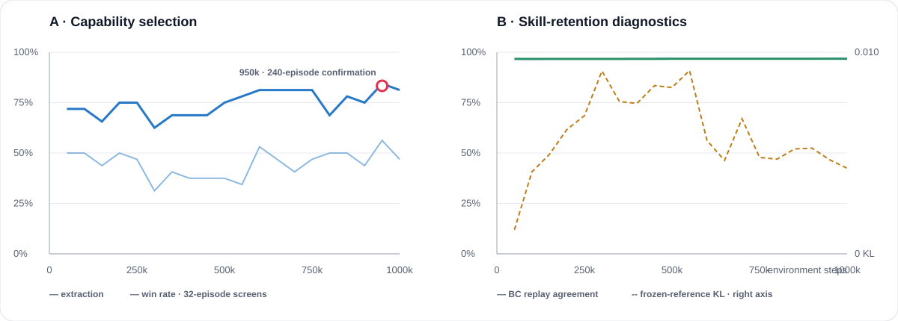

Strong
Balanced task capability
Search→valuable loot→ extract→bank value
Balanced task capability
Search→valuable loot→ extract→bank value

Useful combat conversion
Five hits→kill→ loot cache→extract

Value preservation under risk
Carrying value→encounter risk→ disengage→preserve value

Useful route and loot diversity
Multiple regions→upgrade backpack →extract
01 · SCENARIO
Each raid samples seven loot items from sixteen safe anchors, so the Bot must search before deciding whether to fight, disengage, or extract.

02 · METHOD
Capability is learned once under randomized loot. Training-only opportunity signals shape bounded adapters while deployment keeps the same fair Actor inputs.

Fair observation. Public inference uses only first-person pixels and the player's own public state. Privileged Critic features and reward ledgers are training-only.
03 · STYLES
Each style starts from the same frozen Strong Bot. The videos are validation-selected product evidence, not benchmark claims.
Priority · complete the task
Balances loot, combat risk, and extraction timing.
Watch: high-value loot becomes banked value.Priority · convert useful fights
Favors combat with sufficient resources, then converts kills into value.
Watch: hit → kill → corpse cache → extraction.Priority · protect carried value
Uses opportunity-conditioned shaping to learn disengagement before extraction.
Watch: stops chasing, creates distance, leaves alive.Priority · improve route and inventory
Visits useful loot regions and replaces low-value items.
Watch: broader search → backpack upgrade → extraction.04 · RESULTS
Current randomized-lineage evidence. Selection never accesses the test split.

| Bot | Evidence tier | Selected causal chain |
|---|---|---|
| Aggressive | Representative case | 5 hits → kill → corpse cache → 85 value |
| Defensive | Representative case | carried-value disengagement → extraction · 0 kills |
| Explorer | Representative case | 4 loot regions → backpack upgrade → 85 value |
The three style videos are representative validation case studies. They demonstrate complete engine-recorded causal chains, not distribution-level superiority or official-test results. Inspect the machine-readable audit ↗ Test and official-test cases were not opened.